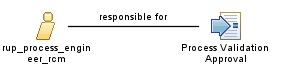

| Role: rup_process_engineer_rcm |
 |
|
Relationships
 |
||
| Additionally Performs | ||
|---|---|---|
Key Considerations
Compliance concernsWherever substantial focus exists to achieve or maintain compliance, the responsibilities of the Process Engineer are vastly expanded, because managing and enhancing processes is a fundamental aspect of compliance management. In particular, the Process Engineer needs considerably more knowledge of and experience with general compliance principles, as well as the specific regulations, standards, and policies that the process must comply with. |